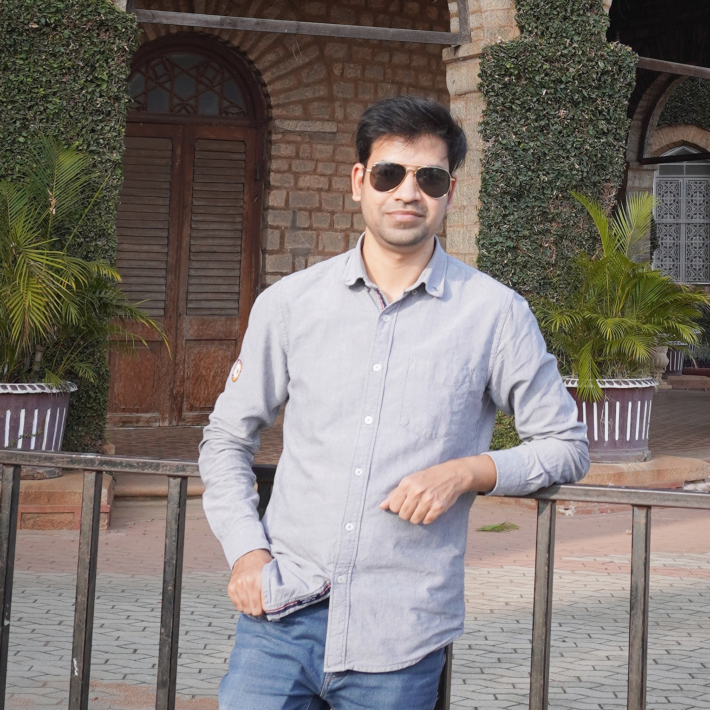

Software Developer with 2.5 years of experience. Proficient at developing quality, maintainable, scalable, and modular code. Adept in handling multiple developers, steering them towards solutions. Inclined towards solving challenging design/architectural problems and delivering awesome code. Inculcating best coding/development practices. Ability to motivate and influence people around me. A team member you can count on. A good listener and trying to be a good speaker as well.
September 2022 - February 2023: Backend Developer at Livpure Smart Homes Pvt Ltd, Bengaluru
August 2020 - August 2022: Backend Developer at STEP TO SOFT, Webel Asansol